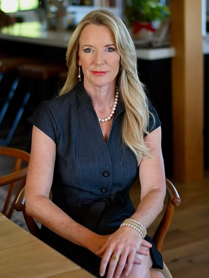
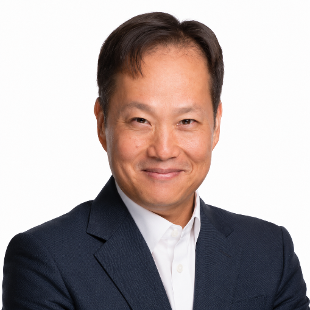
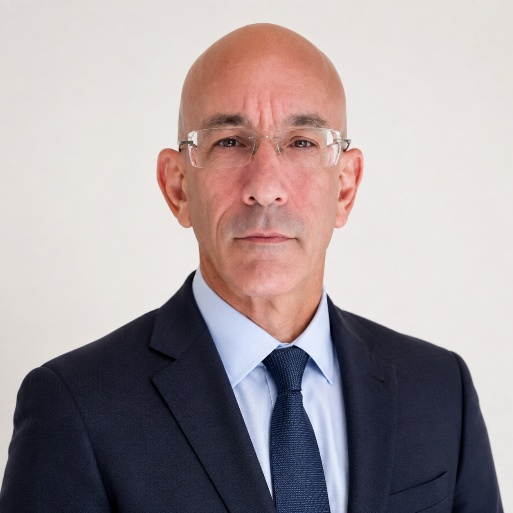
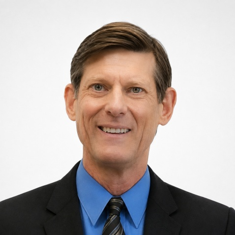
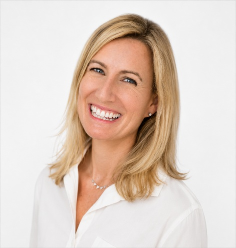

MEET THE TEAM PAGE

Founder and CEO
Kristin Cooper is a funding strategist and government affairs expert with over 30 years of experience helping organizations compete for and win federal, state, and foundation funding. She founded Grant Management Associates in 2009 with a clear mission: bring strategic intelligence to the grant funding process — not just good writing, but the analytical rigor to know which opportunities are worth pursuing and the methodology to win them.
Under Kristin's leadership, GMA has secured over $2.5 billion in funding for clients. She developed GMA's proprietary Key Considerations Analysis (KCA) methodology, which evaluates competitive positioning, organizational fit, and scoring criteria before a single word of a proposal is written. This "Go/No-Go" approach is why GMA's clients don't waste resources on lost causes — and why they win at an extraordinary rate when they do pursue.
Before founding GMA, Kristin served as a Full Professor at California State University, Chico's College of Engineering, where she directed grant-funded programs across five colleges. She was the founding director of CSU Chico's Environmental Resource Program and the Concrete Management Program. Kristin also served as a registered federal lobbyist, where she was instrumental in securing a $100 million line item in the Department of Energy budget.
Today, Kristin leads GMA's evolution into a funding intelligence platform — integrating AI-powered grant matching with decades of human strategic judgment. She oversees a team that spans defence, energy, infrastructure, agriculture, and workforce development — the sectors where federal dollars are flowing and where GMA's clients are winning.
By the Numbers
Kristin's Certifications
Professional Credentials
Certified Sustainable Development Practitioner | Association of Energy Engineers
Certified Professional Contracts Manager (CPCM)
Master Certificate in Concrete Fundamentals | Hanley Wood, World of Concrete
Green Building and Sustainable Design Certificate Program | UC Davis; Land Use and Natural Resources, and Business and Technology coordinated with Leadership in Energy and Environmental Design (LEED)
Sustainability Performance Metrics | Natural Logic, Short Course Certification on the selection and use sustainability performance metrics and incentives.
Special Certification in Environmental Justice | (Train the Trainer), United States Environmental Protection Agency
Certified Professional Contracts Manager (CPCM)

Chief Finance Officer, CFO
Mark Sue is an experienced finance and strategic operations professional with over 20 years of experience supporting startups and growth-stage companies through financial planning, capital strategy, operational planning, and sustainable growth. With a background spanning engineering, finance, and investment banking, Mark brings a strong combination of analytical expertise, financial acumen, and strategic business insight to his work.
At Grant Management Associates, Mark supports financial and operational strategy, helping translate organizational goals into actionable plans while strengthening decision-making, performance management, and long-term growth. Throughout his career, he has worked closely with founders, executive teams, and institutional investors, supporting companies across multiple stages of growth, including Series A, B, and C ventures. His experience includes capital raising, investor positioning, financial systems, budgeting, performance metrics, and equity and debt financing.
Mark’s approach combines CFO-level financial expertise with a practical focus on scalable systems, data-driven decision-making, and effective capital allocation. He helps organizations build the financial and operational foundations needed to navigate growth, fundraising, and long-term strategic objectives.

Chief Operating Officer, COO
Ed Ober is the Chief Operating Officer of GMA where he brings over 20 years of experience in leadership, grant writing, strategic operations, systems development, project / program management, as well as team and organizational leadership. A seasoned professional in the funding landscape, Ed oversees the operational execution GMA client engagement, ensuring that proposals are developed with precision, competitiveness, and mission alignment. Ed leads grant teams for GMA and has overseen the process resulting in more than $500M in grant awards for GMA clients in the last 12 years. Ed’s experience in funding spans diverse sectors including energy, transportation, housing, infrastructure, agriculture, water, healthcare, HVAC, disaster mitigation and recovery and more. This experience encompasses grants, loans, tax credits, incentives, bonds, philanthropy and other funding mechanisms.
In addition to his work with GMA, Ed is also on the Board of Directors of the Active Inference Institute, where he is leading the development of the institute’s 10-year strategic plan and the development and build-out of entire new services. The Active Inference Institute is a nonprofit advancing the science of how biological and artificial systems learn and make decisions through a framework called active inference, drawn from theoretical neuroscience.
In addition, Ed is a forward-thinking entrepreneur developing a transformative framework for participatory governance – a multifaceted initiative that includes a book, podcast, and direct democracy platform designed to redefine civic engagement for the digital age. Ed holds a degree in Political Science from California State University, Long Beach. His blend of analytical rigor and visionary thinking makes him a driving force behind GMA’s continued success in securing critical funding for clients nationwide.

Director of Business Development
Brad Zerbe has over thirty years of experience in grant writing, fundraising, lending, and business consulting. He is the former political director for the nation’s largest PAC, and finance director for the chairman of the U.S. Senate Finance Committee. He is a former registered federal, state, and state procurement lobbyist. He has worked for three of the nation’s five largest financial institutions in securities and banking compliance.
Brad has graded grants in national competitions and served as Chairman and CEO of nonprofit organizations and won over $400 million in grants. In college, he competed in debate, finishing second in the nation, and won his school’s highest scholarship for leadership.

Laurie Goldberg, Esq.Arthine Cossey Van Duyne, MBA
Water Grant and Debt Financing Lead
Arthine, the Principal Consultant at WaterFunder, LLC, is a dedicated finance and strategic partnerships consultant specializing in project funding and financing solutions for water infrastructure and nature-based solutions. Her global management experience spans the public, private, government, academic, startup, and nonprofit sectors. She has crafted and implemented growth and expansion strategies for development banks, foreign direct investment agencies, water utilities, capital markets, and Silicon Valley tech giants. Arthine is an Environmental Justice advisor for the San Francisco Public Utilities Commission’s Community Advisory Committee. Arthine is an Army veteran, a Board Advisor for the Freshwater Trust, and a Board Member of the Pacific Institute. She was a Fuse Executive Fellow and an Aspen Climate Policy Fellow, and holds a BA in Economics from UC Davis and an MBA from IMD in Switzerland.
Sarthak Tandon
Chief of Staff and EA to CEO
Sarthak Tandon is an experienced operations and executive support professional serving as Chief of Staff and Executive Assistant to the CEO. He partners closely with the CEO on strategic priorities, executive coordination, operational planning, and cross-functional initiatives, helping translate organizational goals into structured and actionable execution.
At Grant Management Associates, Sarthak supports client-facing processes, internal workflows, team collaboration, and executive-level priorities, ensuring effective communication and alignment across stakeholders. His experience in process-driven environments, combined with a strong focus on organization, proactive problem-solving, and detail-oriented execution, enables him to serve as a trusted partner to leadership and contribute to the efficient and strategic functioning of the organization.